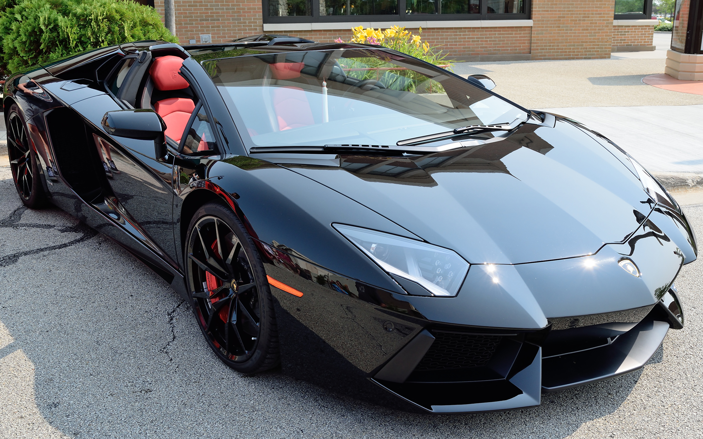

В начале 1960-х годов Ферруччо Ламборгини был владельцем нескольких компаний и мог себе позволить приобретать дорогие автомобили. В разное время у него были Mercedes 300SL, несколько Maserati 3500 GT, Jaguar E-type. Он также владел несколькими Ferrari 250 GT, разных версий. Но в каждом автомобиле он находил некоторые недочёты.
Существует несколько версий о причинах, по которым Ламборгини основал собственную фирму. Все эти версии сводятся к конфликту между Энцо Феррари (владельцем компании Ferrari) и Ферруччо Ламборгини. Наиболее популярная версия, рассказанная сыном Ферруччо Ламборгини, гласит, что Ламборгини приехал на фабрику к Энцо Феррари пожаловаться на качество сцепления в своём автомобиле Ferrari 250 GT. Энцо отправил Ламборгини обратно с пожеланием и дальше заниматься тракторами, потому что в автомобилях, а тем более спортивных, Ламборгини ничего не понимает. Ламборгини вернулся на фабрику, разобрал трансмиссию в своём Ferrari 250 GT и обнаружил, что производитель многих деталей тот же, что и в тракторах Lamborghini. На своих складах он нашёл подходящую замену, и после сборки проблема была решена.
Ферруччо решил, что его автомобиль будет иметь двигатель V12, этот двигатель был также выбран по экономическим причинам. Ферруччо привлёк к своему проекту талантливого инженера Джотто Биццарини (Giotto Bizzarrini), владельца компании Bizzarrini S.p.A, который до этого разрабатывал V12 для Ferrari.
Прототип автомобиля Lamborghini 350 GTV был представлен общественности на автошоу в Турине в октябре 1963 года[8]. В марте 1964 года был показан первый серийный автомобиль Lamborghini 350 GT. Продажи серийной версии были весьма успешными. Рождённый под знаком тельца, Ферруччо Ламборгини украсил автомобиль логотипом с изображением быка.
За успехом модели 350 GT последовала не менее успешная модель Lamborghini 400 GT, принёсшая достаточно средств для разработки первой настоящей «жемчужины» фирмы, легендарной Lamborghini Miura. Этот прототип автомобиля был продемонстрирован самим Ферруччо в ноябре 1965 года на автошоу в Турине, а уже в марте 1966 года на автомобильной выставке в Женеве была представлена рабочая версия. Miura имела большой успех — только за 1967 год было продано 111 автомобилей — и компания получила известность по всему миру.
В 1971 году Lamborghini снова удивил мир прототипом новой революционной модели Lamborghini Countach. Хотя сам автомобиль начал производиться только тремя годами позже (в 1974), до этого времени он оставался в центре внимания на любом автошоу. Прототип имел новомодные тогда вертикально открывающиеся двери, задние воздухозаборники и мощный 4-литровый двигатель.

Трактор Lamborghini DL25
Трактор Lamborghini
Однако в 1972 году у компании случился серьёзный кризис — был прерван контракт на поставку крупной партии тракторов в Южную Америку. Недостаток средств вынудил Ферруччо продать часть своей доли тракторного производства, которая была куплена компанией Fiat. В конечном счёте, всё тракторное производство перешло под владение Same Deutz-Fahr Group, которая и производит трактора Lamborghini по сегодняшний день.
В течение семидесятых годов успешные продажи Lamborghini Countach поддерживали компанию на плаву. Вскоре автомобильное производство стало самодостаточным и прибыльным, но, тем не менее, Ламборгини продал свою долю компании швейцарским инвесторам — Жоржу-Анри Росетти (Georges-Henri Rossetti) и Рене Леймеру (René Leimer). Феруччо Ламборгини умер в 1993 году в возрасте 76 лет.
В результате нефтяного кризиса 1970-х годов продажи спортивных автомобилей резко упали. Компания, в числе других, столкнулась с финансовыми проблемами, поставки запасных частей были сорваны, заказы на автомобили были распроданы на 2 года вперёд и покупатели были весьма недовольны таким сроком ожидания. Как результат, в 1978 году компания объявила себя банкротом. Итальянский суд был вынужден продать компанию. Она была куплена братьями Мимрам из Швейцарии.
Покупка компании корпорацией Chrysler стала очередным сюрпризом. В это время велась работа над последователем Countach — Lamborghini Diablo. Значительные технические и финансовые ресурсы были вовлечены в модернизацию компании и выпускаемых автомобилей, и конечный результат стал очередным успехом для компании — модель Diablo очень быстро вывела компанию снова на мировой уровень.
В 1994 году корпорация Chrysler из-за финансовых трудностей была вынуждена продать Lamborghini инвестиционной группе из Индонезии M’tec (Megatech) под руководством Томми Сухарто[en]. По той же самой причине (финансовые проблемы) компания в 1998 году снова поменяла владельца, на этот раз новым владельцем стала компания Audi AG[5]. Новый владелец снова оказал большое влияние на дизайн выпускавшихся суперкаров, сегодняшних Lamborghini Murciélago.
Различные модели имеют свои технические новшества, например: кузов из углеволокна, высокотехнологичные двигатели V12. Оригинальный стиль автомобилей разрабатывался Франко Скальоне (Franco Scaglione), Touring, Zagato, Марио Марацци (Mario Marazzi), Bertone, ItalDesign и Марчелло Гандини (Marcello Gandini) — известными по всему миру.
В 2001 году в Сант’Агата Болоньезе был открыт фирменный музей — Museo Lamborghini, в 2016 году его реконструировали и полностью изменили экспозиции[9].
В марте 2019 года компания Lamborghini совместно с итальянским аксессуарным брендом Piquadro выпустили новую модель рюкзака. Его презентация состоялась на Женевском автосалоне 2019. Рюкзак Piquadro Bagmotic Special-Edition Automobili Lamborghini, выпущенный тиражом всего в 63 экземпляра — по году основания автопроизводителя, создан из высокотехнологичных материалов, используемых в автомобилях Lamborghini: искусственной замши Alcantara, карбонового волокна, а также гладкой и зернистой кожи. Дизайном спортивного автомобиля вдохновлены детали рюкзака — оранжевая вставка спереди, напоминающая типичную форму буквы Y в дизайне машины, особенно выделяющуюся на сидениях и фарах[10].
Модели
- 2011 Lamborghini Aventador
- 2005 Lamborghini Gallardo
- 2002 Lamborghini Murciélago Roadster
- Lamborghini Diablo VT Roadster
- Lamborghini Countach
- Lamborghini 350 GT
- Lamborghini Urus
- Модель Годы выпуска Двигатель Максимальная скорость Количество экземпляров
- 350 GT 1964—1967 V12 3464 см³ 254 км/ч 123
- 400 GT 1966—1968 V12 3929 см³ 260 км/ч 247
- Miura 1966—1973 V12 3929 см³ 288 км/ч 764
- Espada 1968—1978 V12 3929 см³ 245 км/ч 1217
- Islero 1968—1970 V12 3929 см³ 248 км/ч 225
- Jarama 1970—1976 V12 3929 см³ 240 км/ч 328
- Urraco 1970—1979 V8 2463 см³ + 230 км/ч 776
- Countach 1974—1990 V12 3929 см³ + 316 км/ч 1997[11]
- Silhouette 1976—1979 V8 2996 см³ 260 км/ч 54
- Jalpa 1982—1989 V8 3485 см³ 240 км/ч 410
- LM002 1986—1992 V12 5167 см³ 210 км/ч 301
- Diablo 1990—2001 V12 5707 см³ + 330 км/ч 2884
- Murciélago 2001—2010 V12 6192 см³ + 340 км/ч 4099
- Gallardo 2003—2013 V10 4961 см³ + 325 км/ч 14022
- Reventón 2008—2009 V12 6496 см³ 356 км/ч 36
- Aventador 2011— V12 6496 см³ 350 км/ч 3646
- Sesto Elementо 2011 V10 5204 см³ 350 км/ч 20
- Veneno 2013 V12 6498 см³ 355 км/ч 16
- Huracán 2014— V10 5204 см³ >325 км/ч нет данных
- Asterion 2014- V10 5204 см³ 320 км/ч 3
- Centenario 2016—2017 V12 6498 см³ >350 км/ч 40
- Urus 2018— V8 3993 см³ 305 км/ч нет данных
- Sian 2020— V12 6498 см³ 350 км/ч 63
Концепткары
Lamborghini Sesto Elemento Concept (2010 год)
Lamborghini Ankonian Concept (2012 год)
Lamborghini Madura (трёхмерная нарисованная модель, в которой предполагается наличие гибридной силовой установки)
Lamborghini Urus Concept (2012 год, концепт кроссовера)
Lamborghini Egoista Concept (2013 год)[12]
Гоночные автомобили
Ферруччо Ламборгини установил за правило, что автомобили Ламборгини не участвуют в гонках, поэтому в годы его руководства компания не производила гоночных автомобилей.
Но, уже оказавшись под руководством Розетти, компания вместе с BMW решила создать автомобиль, пригодный для автогонок. Однако Ламборгини со своей частью задачи не справилась, и автомобиль был целиком разработан спортивным отделением BMW. Позднее он поступил в производство и продажу как BMW M1.
В 1986 году для участия в соревнованиях группы «C» компания создала автомобиль Lamborghini QVX. Автомобиль был построен, но проблемы со спонсорами вынудили пропустить сезон. QVX участвовал только в одной непризовой гонке на трассе «Кьялами» (Йоханнесбург) в 1986 году под управлением Тиффа Ниделла (англ. Tiff Needell). Несмотря на то, что автомобиль показал достаточно неплохой результат, программа финансирования была свёрнута.
С 1989 по 1993 год Ламборгини поставлял двигатели V12 для автомобилей Формула 1. Двигатели поставлялись для Larrousse, Ligier, Lotus, Minardi. В 1991 году Ламборгини выставила в гонках собственную команду, просуществовавшую лишь один сезон. Этот же двигатель, но под логотипом Chrysler (нового владельца компании), в 1993 году тестировался на McLaren. Хотя по результатам тестирований двигатель рекомендовался для использования в сезоне 1994 года, команда предпочла двигатель от Peugeot, и Chrysler закрыл проект.
Для участия в Diablo Supertrophy — соревнованиях одной модели, проводившихся ежегодно с 1996 по 1999 годы, компания предоставила две модификации автомобиля Lamborghini Diablo — Diablo SVR в первый год и Diablo 6.0 GTR в остальные 3 года.
Lamborghini разрабатывал Lamborghini Murciélago R-GT для участия в чемпионате FIA GT и 24 часа Ле-Мана. Наилучшие результаты всех этих соревнований — первое место (стартовал последним) в классе LMGT1 на трассе «Каталунья» в серии «Ле-Ман» 2009 г. (автомобиль российской команды «ИнтерПрогрессБанк СПАРТАК Рейсинг») и третье место (стартовал пятым) при открытии чемпионата FIA GT в Валенсии (автомобиль был выставлен командой Reiter Engineering).
Версия Lamborghini Gallardo для участия в чемпионате FIA GT3 разрабатывается командой Reiter Engineering.
Прототипы
Lamborghini Reventon
Lamborghini Reventon
Lamborghini 350 GTV (1963)
Lamborghini 350 GTS (1965)
Lamborghini 3500 GTZ (1965)
Lamborghini Marzal (1967)
Lamborghini LP5000 Countach
Lamborghini AMS Raceca (1972)
Lamborghini P114 Bravo (1974)
Lamborghini Faena
Lamborghini Cheetah (1977)
Lamborghini Countach «Alfieri»
Lamborghini Athon (1980)
Lamborghini LM 001 (1981)
Lamborghini Marco Polo (1982)
Lamborghini LM 004 (1984)
Lamborghini Portofino (1987)
Lamborghini P140 (1988)
Lamborghini Genesis (1988)
Lamborghini Calà (1995)
Lamborghini Canto (1999)
Lamborghini Stella (2000)
Lamborghini Concept S (2005)
Lamborghini Miura Concept (2006)
Lamborghini Estoque Concept (2008)
Lamborghini Aventador Jota (2012)
Судовые двигатели
Lamborghini на протяжении нескольких лет выпускала большие двигатели V12 морских блоков для использования в гонках на моторных лодках, в частности World Offshore Series Class 1. Этот двигатель выпускается с рабочим объёмом приблизительно 8171 см³ с выходной мощностью около 940 л. с.
Участие в «Формуле-1»
Основная статья: Ламборгини (команда «Формулы-1»)
Компания участвовала в гонках «Формулы-1» в 1989—1993 годах в качестве поставщика двигателей для команды Larrousse (1988—1990, 1992—1993), Lotus (1990), Ligier (1991) и Minardi (1992). В 1991 году автомобиль команды Modena, участвовавший в чемпионате, был полностью разработан и изготовлен компанией.